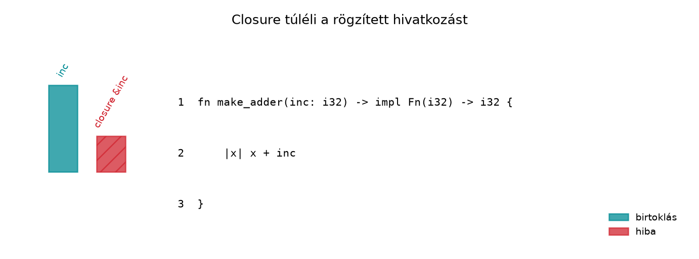

A C++-fejlesztő a lambda-kifejezéseknél megszokta az explicit
capture-listát: [&], [=],
[x], [x = std::move(x)]. Ez a felsorolás
pontosan megmondja, hogy a lambda mit és hogyan rögzít a környezetéből.
A Rust ezt a döntést nem a programozóra bízza, hanem a closure törzséből
vezeti le: a borrow checker látja, hogy a closure csak olvas, módosít,
vagy tulajdonba vesz egy értéket, és ennek megfelelően rendeli hozzá a
három lehetséges trait egyikét. Ez eleinte kényelmetlenül szokatlan, de
a gyakorlatban megszünteti az elavult lambda-fogásokból adódó hibák
egész osztályát. A C++-ban egy [&x] lambda túlélheti az
x élettartamát, és futás közben dangling hivatkozást
használhat; Rustban ugyanez fordítási időben hibát ad. Ez a fejezet azt
mutatja meg, hogyan válasszunk a Fn, FnMut és
FnOnce trait-ek, valamint a move kulcsszó
között.
Definíció. A closure (zárvány) olyan
névtelen függvényérték, amely rögzítheti a környezetében lévő
változókat. A Rust closure szintaxisa |paraméterek| törzs,
és a capture módját nem deklaráljuk explicit módon: a fordító a törzsben
használt változók alapján állapítja meg.
Definíció. A Rust standard könyvtár három
closure-traitet definiál, amelyek supertrait-lánccal kapcsolódnak:
Fn ⇒ FnMut ⇒
FnOnce (az Fn az FnMut
alatt, az pedig az FnOnce alatt áll). A különbségüket a
hívás receiverje adja:
FnOnce: call_once(self), a closure
egyszer hívható, és a hívás elfogyaszthatja
(kimozgathatja) a rögzített értékeket. Ez a legkevésbé szigorú
követelmény: minden closure megvalósítja.FnMut: call_mut(&mut self),
többször hívható, a hívás módosíthatja a rögzített
állapotot. Minden Fn closure egyben FnMut
is.Fn: call(&self),
többször hívható anélkül, hogy a rögzített állapotot
módosítaná vagy kimozgatná; a hívás csak megosztott hozzáférést használ.
Ez a három közül a legszigorúbb követelmény (a legkevesebb closure
teljesíti).A capture módját és a hívhatósági traitet külön kell
tartani. A capture mód (megosztott hivatkozás,
&mut hivatkozás, vagy tulajdonba vétel
move-val) azt dönti el, hogyan rögzít a closure; a
trait azt, hogy a törzs mit csinál a rögzített értékekkel hívás
közben. Ezért egy move closure is lehet
Fn: ha a törzs csak olvassa a rögzített értéket.
Ellenőrzött példák:
use std::cell::Cell;
fn call_fn<F: Fn()>(f: F) {
f();
f();
}
fn main() {
let s = String::from("hello");
let printer = move || println!("{s}"); // move rögzítés, a törzs csak olvas: Fn
call_fn(printer); // kimenet: hello, hello
let counter = Cell::new(0);
let tick = || counter.set(counter.get() + 1); // megosztott rögzítés + belső mutabilitás: Fn
call_fn(&tick); // kétszer hívjuk
tick(); // egyszer még
println!("{}", counter.get()); // 3
}A move closure (printer) tehát
Fn, a belső mutabilitással számláló tick is
Fn (nem FnMut!), mert nem módosít rögzített
értéket a hívás receiverén át, csak a Cell
belsejét egy megosztott hivatkozáson keresztül. Az igazán
FnOnce closure az, amely a törzsben kimozgat egy rögzített
értéket (move || t): ha ezt Fn() -> String
boundú függvénynek adjuk, a fordító E0525-tel jelzi, hogy a
closure csak FnOnce.
Szabály. A closure által implementált traitet a
törzs használati módja határozza meg. Ha a closure: - a rögzített
értékeket csak megosztott hozzáféréssel használja (olvassa, vagy belső
mutabilitással írja), akkor Fn (és ezzel FnMut
és FnOnce is); - módosítja a rögzített változót
(&mut hozzáférés), de nem mozgatja ki, akkor
FnMut (és FnOnce); - kimozgat egy rögzített
értéket a hívás során (visszaadja vagy eldobja), akkor csak
FnOnce.
Szabály. A move kulcsszó a closure
elején minden, a törzsben használt változót by value rögzít. Ha
a változó típusa Copy, akkor a move másolatot
készít; ha nem Copy, akkor a tulajdonjog átkerül a
closure-be. A move nélküli closure a lehető legszűkebb
hivatkozást használja: &T-t, ha elég,
&mut T-t, ha módosít, és csak akkor mozgat, ha
elkerülhetetlen.
Szabály. A trait-hierarchia miatt egy
Fn closure átadható olyan függvénynek, amely
FnMut vagy FnOnce boundot vár. Egy
FnMut closure átadható FnOnce paraméternek, de
Fn-t váró paraméternek nem. A fordítási hibák ilyenkor a
trait-követelmények megsértését jelzik.
A C++ lambda capture-listája és a Rust implicit capture közötti különbség jól látható egy egyszerű példán.
#include <iostream>
int main() {
int x = 10;
auto f = [&x]() { return x + 1; }; // hivatkozás
auto g = [x]() mutable { return ++x; }; // másolat, módosítható
auto h = [x = std::move(x)]() { return x; }; // move capture
std::cout << f() << ' ' << g() << ' ' << h() << '\n';
}A Rust-megfelelő:
fn main() {
let mut x = 10; // mut kell: a g saját másolata módosul
let f = || x + 1; // &x, Fn
let mut g = move || { x += 1; x }; // x Copy, move másol, FnMut
let h = move || x; // x Copy, move másol, Fn
println!("{} {} {}", f(), g(), h());
}Kimenet: 11 11 10, a C++-példával megegyezően. A két
mut két különböző dolgot tesz módosíthatóvá. A
let mut x azért kell, mert a move closure az
x másolatát a closure-be viszi, és ennek
módosítása csak akkor megengedett, ha az eredeti kötés mut
(különben E0594: „cannot assign to x, as it is
not declared as mutable”). A let mut g pedig azért kell,
mert egy FnMut closure meghívása
&mut self-et igényel, vagyis maga a g
kötés módosítható kell legyen. Mivel a g a saját másolatán
dolgozik, az eredeti x értéke (10) nem változik, ezért a
h() is 10-et ad.
A legfontosabb különbség az, hogy a Rustban a
[&x]-nek megfelelő hivatkozás az alapértelmezett, és
nincs szükség & jelölésre. A C++ [x]
másoló capture-jéhez a Rustban move kell, mert a Rust
closure alapból nem másol, hanem hivatkozik. A mutable
kulcsszó a Rustban nem létezik ilyen formában; a módosító closure
automatikusan FnMut lesz, és a változót
mut-tal kell deklarálni. A move closure nem
Copy típus esetén felel meg a C++ move capture-nek.
A FnOnce viselkedésére a legjobb példa, amikor a closure
egy nem Copy értéket mozgat ki magából.
let s = String::from("hello");
let consume = move || s; // s mozgatva a closure-be
println!("{}", consume()); // s kikerül a closure-ből
// consume(); // hiba: use of moved valueC++-ban a lambda újrahívása szabályos és nem definiálatlan
viselkedés: a
[s = std::move(s)]() mutable { return std::move(s); }
lambda második hívásánál az s moved-from állapotú
std::string, amely érvényes, de nem meghatározott tartalmú
(általában üres: ellenőrzött kimenet a=hello b=[]). Rustban
a kimozgató closure FnOnce: a második hívás fordítási hiba,
így az érvénytelen állapot el sem érhető.
A leggyakoribb feltörekvő hiba, amikor egy closure-t vissza akarunk adni egy függvényből, de a closure a függvény paraméterére hivatkozik.
Ez a változat szándékosan nem fordul le:
fn make_adder(inc: i32) -> impl Fn(i32) -> i32 {
|x| x + inc
}A hiba lényege:
E0373: closure may outlive the current function, but it borrows `inc`,
which is owned by the current functionA make_adder visszatérő closure túléli a függvény
veremkeretét, tehát az inc-re mutató hivatkozás érvénytelen
lenne. Ezt a lifetimes diagram is szemlélteti.

A javítás a move kulcsszóval:
fn make_adder(inc: i32) -> impl Fn(i32) -> i32 {
move |x| x + inc
}
fn main() {
let add_five = make_adder(5);
println!("{}", add_five(10)); // 15
}Mivel az i32 Copy típus, a
move a closure saját másolatát rögzíti az
inc-ből, így a visszaadott closure önálló tulajdonú, és
nincs élettartam-probléma.
A FnMut működését egy apply_twice
függvénnyel mutatjuk be:
fn apply_twice<F: FnMut() -> i32>(mut f: F) -> i32 {
f() + f()
}
fn main() {
let mut x = 0;
let r = apply_twice(|| {
x += 1;
x
});
println!("r = {r}, x = {x}");
}A várt kimenet:
r = 3, x = 2A closure FnMut, mert módosítja az x-et. A
apply_twice kétszer hívja, ezért a zárt változó értéke
kétszer növekszik.
Munkakönyvtár: ~/rust-labor/rkv/
Ebben a laborban egy callback-alapú parancsdiszpécsert készítünk az
rkv-core könyvtárban. A cél egy olyan függvény, amely egy
Command slice-on megy végig, és minden parancshoz meghív
egy closure-t. Ez a függvény később az iterátor-alapú feldolgozásban (Iterátorok: lusta adapterek és saját iterátor) is
újra felhasználható.
A kiinduló állapot az Trait objektumok és
dinamikus diszpécs ellenőrzési pontja. A Command enum
az rkv-core/src/command.rs-ben él,
tuple-variánsokkal: Get(String),
Set(String, String), Delete(String),
List(Option<String>) (Az enum
mint összeg-típus és az Option a null helyett). A callback-kód és a
tesztek ehhez igazodnak; a variánsok szerkezetét nem változtatjuk.
cd ~/rust-labor/rkv
cargo test -p rkv-coreEnnek sikeresen le kell futnia, mielőtt továbblépünk.
callback modultKódblokk — fájl: rkv-core/src/lib.rs · művelet:
beillesztés a pub mod sorok közé · ellenőrzés:
cargo build -p rkv-core
pub mod callback;Hozd létre az rkv-core/src/callback.rs fájlt a következő
tartalommal:
Kódblokk — fájl: rkv-core/src/callback.rs ·
művelet: új fájl · ellenőrzés: cargo build -p rkv-core
use crate::command::Command;
/// Végigjárja a parancsokat, és mindegyikre meghívja a callbacket.
pub fn visit_commands<F>(commands: &[Command], mut f: F)
where
F: FnMut(&Command),
{
for command in commands {
f(command);
}
}A függvény FnMut(&Command) boundot használ, mert a
callback módosíthat külső állapotot (például számlálót), de magát a
Command értéket nem kell módosítania. A
&Command paraméter lehetővé teszi, hogy a closure
olvassa a parancs adatait anélkül, hogy tulajdonba venné.
Az rkv-core/src/callback.rs aljára illeszd be a
következő tesztmodult:
Kódblokk — fájl: rkv-core/src/callback.rs ·
művelet: beillesztés a fájl végére · ellenőrzés:
cargo test -p rkv-core callback → 1 sikeres teszt ebben a
lépésben (a törzslabor végén 2)
#[cfg(test)]
mod tests {
use super::*;
fn sample() -> Vec<Command> {
vec![
Command::Set("a".to_string(), "1".to_string()),
Command::Get("b".to_string()),
Command::Set("c".to_string(), "2".to_string()),
]
}
#[test]
fn count_set_commands() {
let commands = sample();
let mut count = 0;
visit_commands(&commands, |cmd| {
if matches!(cmd, Command::Set(..)) {
count += 1;
}
});
assert_eq!(count, 2);
}
}Figyeljük meg, hogy itt nincs move a closure előtt,
tehát a closure a count változót &mut
hivatkozással rögzíti. A visit_commands hívása után a
count továbbra is elérhető, és az assert_eq!
ellenőrizheti.
move closure két arcaA count egy i32, vagyis Copy.
Egy move closure ezért másolatot rögzít, a
külső count pedig érintetlen marad. Ez a változat
lefordul, de nem azt teszi, amit várnánk:
Kódblokk — fájl: rkv-core/src/callback.rs ·
művelet: beillesztés a mod tests blokkba · rossz
megfigyelt állapot: lefordul, a külső count 0
marad · ellenőrzés: cargo test -p rkv-core callback
#[test]
#[allow(unused_assignments)] // szándékos: a másolat értékét senki nem olvassa
fn move_closure_counts_a_copy() {
let commands = sample();
let mut count = 0;
visit_commands(&commands, move |cmd| {
if matches!(cmd, Command::Set(..)) {
count += 1; // a closure saját másolatát növeli
}
});
assert_eq!(count, 0); // a külső count nem változott
}A count += 1 a closure belsejében a másolatot növeli (a
fordító ezt maga is jelzi: „value captured by count is
never read” és „value assigned to count is never read”,
vagyis unused_assignments figyelmeztetés; a tesztben ezért
van #[allow(unused_assignments)], hogy a workspace
clippy -D warnings mellett is tiszta maradjon), a külső
count így 0 marad, míg a move nélküli,
&mut-kölcsönzést használó változatban a végeredmény 2
volt. A hiba tehát nem fordítási, hanem logikai: a
számláló csendben rossz.
Valódi E0382 akkor keletkezik, ha a rögzített érték
nem Copy, és a closure tulajdonba
veszi:
Kódblokk — önálló példa · szándékosan hibás
· várt hiba: E0382
(borrow of moved value:seen``)
let commands = sample();
let mut seen: Vec<String> = Vec::new();
visit_commands(&commands, move |cmd| seen.push(cmd.to_line()));
println!("{seen:?}"); // E0382: a seen a closure-be kerültA javítás ismét a move elhagyása (a closure
&mut seen-t rögzít), vagy az eredmény visszaadása a
closure-ből.
cargo test -p rkv-core callbackA várt kimenet (a sorrend változhat; a törzslabor 2 tesztet tartalmaz, a harmadik a c) feladat megoldása után jelenik meg):
running 2 tests
test callback::tests::count_set_commands ... ok
test callback::tests::move_closure_counts_a_copy ... okEllenőrzési pont a c) feladat után. A
visit_commands_mut megoldásával a
cargo test -p rkv-core callback már 3 tesztet futtat; a
harmadik a külön tests_mut modulban van:
running 3 tests
test callback::tests::count_set_commands ... ok
test callback::tests::move_closure_counts_a_copy ... ok
test callback::tests_mut::convert_delete_to_get ... okEzzel elkészült a visit_commands függvény, amely
closure-t fogad paraméterként. Továbbvitt eredmény: ez
a callback-minta az iterátoroknál (Iterátorok: lusta
adapterek és saját iterátor) az Iterator::for_each-hez
hasonló logikát készíti elő, a move closure-ök pedig a
párhuzamos (Szálak, Send és Sync: data race
fordítási időben kizárva) és aszinkron (Future-ök és async/await: mi történik a motorháztető
alatt) kódban lesznek elengedhetetlenek.
A C++ [=] mintájára másolást
várunk. A Rust closure alapból hivatkozik, nem másol. Ha a
closure-t el akarjuk tárolni, és a környezeténél tovább kell élnie,
akkor move kell. Ha a tulajdonost meg akarjuk őrizni, és a
closure-t is el kell tárolni, a másolatot a closure előtt
készítjük (let c = x.clone();), és azt
move-oljuk a closure-be. A clone() a törzsben
move nélkül nem segít: a closure ilyenkor is az eredetit
kölcsönzi, move-val pedig az eredeti már a closure-é
lenne.
FnMut closure átadása Fn-t váró
paraméternek. Gyakori hiba, amikor egy módosító closure-t
próbálunk átadni egy olyan függvénynek, amely csak olvasó callbacket
vár. A fordítási hiba egyértelmű: a closure nem teljesíti az
Fn boundot, mert &mut-tal rögzíti a
változót. A megoldás vagy a függvény boundjának lazítása
FnMut-ra, vagy a closure áttervezése.
A move closure után a külső változó
használata. Amikor egy nem Copy értéket
move-val rögzítünk, a külső változó érvénytelenné válik. Ez
a hiba különösen a szálaknál (Szálak, Send és Sync:
data race fordítási időben kizárva) válik gyakorivá, ahol a
move elengedhetetlen, de a külső változó elérése már nem
lehetséges. Ilyenkor Arc vagy Clone
szükséges.
A Rc<RefCell<T>>
túlhasználata. A C++ shared_ptr tapasztalat
alapján csábító lehet minden closure-t
Rc<RefCell<_>>-kel körbevenni, hogy a borrow
checker „ne zavarjon”. Ez azonban futásidejű kölcsönzési hibákhoz vezet,
és megkerüli a Rust tervezési előnyeit. A closure-öket elsősorban a
természetes capture-szabályokkal érdemes használni.
fn call<F: Fn()>(f: F) {
f();
}
fn main() {
let mut x = 0;
call(|| x += 1);
}int count = 0;
auto inc = [&count]() { return ++count; };
auto total = inc() + inc();Bővítsd az rkv-core/src/callback.rs modult egy
visit_commands_mut függvénnyel, amely
&mut Command-ot ad át a closure-nek, és írj tesztet,
amely egy Command::Delete parancsot
Command::Get-re módosít a callbackben. (A
Command tuple-variánsait használd:
Delete(String), Get(String).)
Az alábbi kód nem fordul le. Javítsd úgy, hogy a külső s
elérhető maradjon a closure hívása után is, és indokold a
választást.
let s = String::from("hello");
let printer = move || println!("{s}");
printer();
println!("{s}");Nem fordul le. A || x += 1 closure módosítja az
x-et, ezért FnMut traitet implementál, nem
Fn-t. A call függvény Fn boundot
vár, így a hívás típushibát ad. A javítás:
fn call<F: FnMut()>(mut f: F) {
f();
}
fn main() {
let mut x = 0;
call(|| x += 1);
}fn main() {
let mut count = 0;
let mut inc = || {
count += 1;
count
};
let total = inc() + inc();
println!("{total}");
}A closure FnMut, mert módosítja a count-ot.
A mut a closure deklarációjánál szükséges, mert a
FnMut hívás &mut self-et igényel.
// rkv-core/src/callback.rs: a meglévő `use crate::command::Command;` sor mellé,
// a `tests` modulon kívülre (a teszt a meglévő `mod tests` blokkba kerül).
pub fn visit_commands_mut<F>(commands: &mut [Command], mut f: F)
where
F: FnMut(&mut Command),
{
for command in commands {
f(command);
}
}
#[cfg(test)]
mod tests_mut {
use super::*;
#[test]
fn convert_delete_to_get() {
let mut commands = vec![Command::Delete("k".to_string())];
visit_commands_mut(&mut commands, |cmd| {
if let Command::Delete(key) = cmd {
*cmd = Command::Get(key.clone());
}
});
assert_eq!(commands[0], Command::Get("k".to_string()));
}
}A visit_commands_mut
FnMut(&mut Command) closure-t vár, így a callback
módosíthatja a parancsot.
A move closure tulajdonba veszi az s-t,
ezért a külső s a hívás után érvénytelen. Két lehetséges
javítás:
Ha az élettartam engedi, egyszerűen ne használjunk
move-ot:
let s = String::from("hello");
let printer = || println!("{s}");
printer();
println!("{s}");A closure ekkor &s-t rögzít, és s a
hívás után is elérhető. A puszta eltárolás önmagában nem követel
move-ot vagy klónt: egy kölcsönzést rögzítő closure
ugyanabban a hatókörben tárolható (például egy Vec-ben),
amíg a kölcsönzött adat elég sokáig él. move akkor kell, ha
a closure túléli a hatókört (visszaadás, thread::spawn),
clone() pedig akkor, ha emellett a külső értéket is tovább
használni akarjuk: az önálló másolatot a closure létrehozása
előtt klónozzuk, és azt mozgatjuk bele:
let s = String::from("hello");
let s2 = s.clone();
let printer = move || println!("{s2}");
printer();
println!("{s}");A move a s2 másolatot rögzíti, így az
eredeti s érintetlen marad.
A Rust closure-ök automatikusan rögzítik a környezetüket, és a
rögzített változók használati módja határozza meg, hogy a
Fn, FnMut vagy FnOnce trait-et
implementálják. A Fn closure többször hívható és csak
olvas, az FnMut módosíthat, az FnOnce pedig
felemésztheti a rögzített értékeket. A move kulcsszó minden
használt változót by value rögzít, ami elengedhetetlen, ha a closure
túléli a környezetét, például szálakban (Szálak,
Send és Sync: data race fordítási időben kizárva) vagy aszinkron
taskokban (Future-ök és async/await: mi történik a
motorháztető alatt). A laborban létrehoztuk az
rkv-core/src/callback.rs modult a
visit_commands függvénnyel, amely
FnMut(&Command) closure-t fogad. Ez a callback-minta az
iterátorok (Iterátorok: lusta adapterek és saját
iterátor) adaptereinél köszön vissza, ahol a closure-ök hasonlóan
rugalmasan kezelik az elemeket.
A fejezet a Rust Book closure-fejezetére (https://doc.rust-lang.org/book/), a Rust Reference
closure-típusokról szóló részére (https://doc.rust-lang.org/reference/) és a standard
könyvtár Fn, FnMut és FnOnce
trait-dokumentációjára támaszkodik. A Command enum elérési
útja rkv_core::command::Command. Az E0373 és
E0382 hibakódok stabilak, a pontos hibaüzenet szövege a
rögzített toolchainre (Rust 1.99.1) vonatkozik.